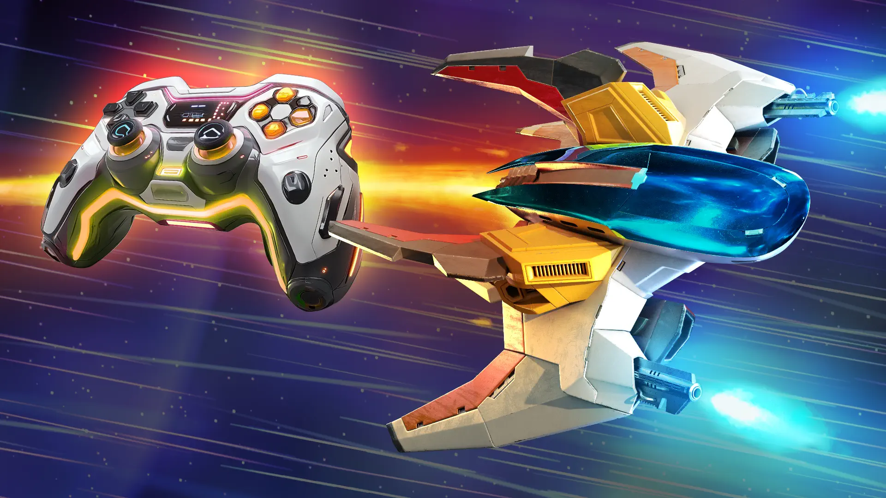

Basics
Phoenix II —FAQ (IOS)

BOOKMARK
FAQ (IOS) by light_rock_zz
Version: 4.8 | Updated: 04/27/2025
FAQ of the Month Winner: January 2020 | Highest Rated Guide
Basics

Game Interface & Controls | ||||
|---|---|---|---|---|
| Controls | Gameplay Interface | Warp Gate | Phoenix Revives | Firi Account |
You can only be killed if a bullet or laser hits your ship core. The rest of the ship is visual and does not matter.
Controls
Touchscreen
- The ship follows your relative touch.
- Lifting your finger from the screen and repositioning your touch does NOT cause your ship to jump to the new spot you tapped at.
- Instead, the ship simply follows any new movement from the new touch point.
- Use a second finger (while your first finger is still in contact with the screen) to tap to activate Aura
 .
. - Release your touch on the screen to charge a Zen
 .
.- Not re-engaging touch on the screen will immediately start charging a second round of Zen for Zens that go off automatically once fully charged. E.g. Reflex EMP
 , Focus Lance
, Focus Lance  , etc.
, etc. - To trigger a Zen that requires manual activation after fully charged (E.g. Mega Bomb , Mega Laser
 ), re-engage touch on the screen.
), re-engage touch on the screen. - For Teleport
 , where you tap on the screen to re-engage touch is where your ship will teleport to.
, where you tap on the screen to re-engage touch is where your ship will teleport to.
- Not re-engaging touch on the screen will immediately start charging a second round of Zen
Controller
Can be used for BOTH mobile and PC, if connected.
- Once connected, controller takes over as the control scheme, meaning PC (BOTH keyboard and mouse controls) or mobile controls will be disabled.
- Unlike Mobile Controls, you are considered to be actively piloting your ship at all times by default.
- In other words, with controller connected, it is as if your finger is always in contact with the screen, but not moving.
- Use the Joystick (shown on the left side of the above diagram) to move your ship around.
- Activate Aura by pressing either the Right Shoulder button or the Bottom button (The S button in the above picture)
- To charge a Zen , hold on to the Left Shoulder button or the Top button (The N button in the above picture).
- Continuing to hold on to the Zen button will immediately start charging a second round of Zen for Zens that go off automatically once fully charged. E.g. Reflex EMP , Focus Lance , etc.
- To trigger a Zen that requires manual activation after fully charged (E.g. Mega Bomb , Mega Laser ), let go of the button to activate the Zen.
- For Teleport , use the Joystick to move to the location you want to go to after using Teleport while holding down the Zen button, and then let go of it. A translucent image of the ship shows you where the ship will be after releasing the Zen button.
- Continuing to hold on to the Zen
- Hold on to the Left button (The W button in the above picture) to decrease movement speed for fine movement.
- Hold on to the Right button (The E button in the above picture) to increase movement speed.
PC offers 2 ways to pilot your ship, Keyboard and Mouse Controls.
Keyboard
- Unlike Mobile Controls, you are considered to be actively piloting your ship at all times by default.
- It is as if your finger is always in contact with the screen, but not moving.
- Use the Arrow Keys (↑, ↓, ←, →, as shown on the right side of the above diagram) to move your ship around.
- The WASD keys do NOT work to move around.
- Activate Aura by hitting the X key.
- To charge a Zen , hold on to the Z key.
- Continuing to hold on to the Z key will immediately start charging a second round of Zen for Zens that go off automatically once fully charged. E.g. Reflex EMP , Focus Lance , etc.
- To trigger a Zen that requires manual activation after fully charged (E.g. Mega Bomb , Mega Laser ), let go of the Z key to activate the Zen.
- For Teleport , use the Arrow Keys (↑, ↓, ←, →) to move to the location you want to go to after using Teleport while holding down the Z key, and then let go of it. A translucent image of the ship will show you where the ship will be after releasing the Z key.
- Continuing to hold on to the Z key will immediately start charging a second round of Zen for Zens that go off automatically once fully charged. E.g. Reflex EMP
- Hold on to the Shift key to decrease movement speed for fine movement.
- Hold on to the Ctrl key to increase movement speed.
Mouse
- Unlike Mobile Controls, you are considered to be actively piloting your ship at all times by default.
- It is as if your finger is always in contact with the screen, but not moving.
- Your ship follows the movement of your mouse.
- This is subject to the In-Game Mouse Speed which is adjustable anywhere from 50% to 150% in the Settings menu.
- Your mouse's DPI settings will also affect this. The higher the DPI, the faster your ship can move around.
- Note that there is a maximum ship movement speed, so setting your In-Game Mouse Speed or Mouse DPI beyond a certain limit may not be ideal as your ship will need to catch up to your movements.
- When this happens, the Mouse Movement Cursor (as shown below) will appear. This cursor shows where your ship core will ultimately be after your ship has caught up with your mouse movements.
- When this happens, the Mouse Movement Cursor (as shown below) will appear. This cursor shows where your ship core will ultimately be after your ship has caught up with your mouse movements.
- Activate Aura by hitting the Left Mouse Click.
- To charge a Zen , hold on to the Right Mouse Click.
- Continuing to hold on to the Right Mouse Click will immediately start charging a second round of Zen for Zens that go off automatically once fully charged. E.g. Reflex EMP , Focus Lance , etc.
- To trigger a Zen that requires manual activation after fully charged (E.g. Mega Bomb , Mega Laser ), let go of the Right Mouse Click to activate the Zen.
- For Teleport , use the mouse to move to the location you want to go to after using Teleport while holding down the Right Mouse Click, and then let go of it. A translucent image of the ship will show you where the ship will be after releasing the Right Mouse Click.
- Continuing to hold on to the Right Mouse Click will immediately start charging a second round of Zen for Zens that go off automatically once fully charged. E.g. Reflex EMP
- Unlike keyboard controls, there is no way to slow down or speed up your movement speed.
It's important to note that you CAN use BOTH keyboard and mouse controls at the same time.
- However, only one movement control scheme is allowed at the same time.
- If you want to swap from keyboard movement to mouse movement, you have to hit either Left Mouse Click or Right Mouse Click first.
- If you want to swap from mouse movement to keyboard movement, simply just hit the Arrow Keys (↑, ↓, ←, →).
- For obvious reasons, using a mouse is the most precise way to pilot your ship. Refrain from using a trackpad (go and find out why) and the Arrow Keys (↑, ↓, ←, →).
- You can use BOTH the X key and the Left Mouse Click to activate Aura
- You can also hold down EITHER the Z key and the Right Mouse Click to charge Zen
- Holding down BOTH has no effect. The one that is held down later is ignored.
- This means you can use the Left Mouse Click to activate Aura
Trivia: There was a bug in a pre-Early Access release which allowed you to activate Aura even while charging Zen. This was achieved by using the Z key to charge Zen first, then using the Left Mouse Click to activate the Aura. Alternatively, it could also be achieved by using the Right Mouse Click to charge Zen first, then using the X key to activate Aura. This exploit was discovered on February 2, 2025, and was quickly patched by the devs on the same day. Here's a playlist showcasing how broken the exploit was:
https://www.youtube.com/playlist?list=PLaRb57eN7IqdkM7wPz3uFkV8vuc6gtqEy
Gameplay Interface
Mobile
- Pause Button. I wonder what it does...
- Mission Progress Bar. Divided into groups of 4, which represent one Act. Each shape represents one wave.
- A red shape indicates a cleared wave in this attempt.
- A white shape indicates this wave was cleared before in previous attempts, but not cleared in this attempt.
- A greyed shape indicates a wave you have never cleared before.
- Score (Left Screenshot) / Time (Right Screenshot).
- Shows Score (which increases as Invaders are destroyed) if the current mission has never been fully cleared before.
- Shows Time if the current mission has been fully cleared before
- Wave Indicator. Shows the current wave you are on.
- Borders. These define the playing area you are allowed to move, and only appears when you are close to them.
PC
- Your Pilot Details. Includes:
- Pilot Level
- Pilot Name
- Rank
- Current Mission Details. Includes:
- Type of mission (Daily
 , Specialist or Community )
, Specialist or Community ) - Rank (Rookie
 to Marshal ). Applicable only for Daily & Specialist missions.
to Marshal ). Applicable only for Daily & Specialist missions. - Tier (D, C, B, A, S, SS, SSS, SSSS). Applicable only for Daily & Specialist missions.
- Type of mission (Daily
- Wave Difficulty bar chart distribution.
- Same as the one you see when you open up the leaderboards for a mission.
- Mission Intel.
- The ones with a red border indicate the weaponries or Invaders present in the current wave.
- Currently used ship (including Apex
 tier if applicable) and main weapon (including damage type - High Impact
tier if applicable) and main weapon (including damage type - High Impact  , Shield Breaker
, Shield Breaker  or Armor Piercing
or Armor Piercing  ).
). - Aura Energy Bar. Shows the Aura trigger key.
- Zen Charge Bar. Shows the Charge Time Increase (if applicable) and Zen charge key.
- Score. Increases as Invaders are destroyed.
- Time. The time you clocked just as you entered this wave.
- Best Time. Your previous best time clocked at the point this wave was fully cleared. Shows up only if you cleared all waves of the current mission before.
- Bullet Tracker. The number of bullets on screen.
- MIRVs and Super MIRVs are counted as 1 bullet until triggered.
- Each laser warning line is counted as 1 bullet. This also includes those from laser MIRVs after triggered.
- The white pulses of lasers are counted as 1 bullet just before the laser turns deadly.
- This explains why the bullet tracker temporarily jumps up just before lasers turn deadly, and then goes back down again.
- Energy Reading. The total amount of energy on field, determined by the energy provided by the particles on field.
- Progress. The wave you are at now.
- Wave Difficulty. The cumulative difficulty of the current wave, based on arbitrarily assigned difficulty values applied on all turrets on the Invaders of the current wave.
- Does not update as turrets or Invaders are destroyed. Only updates at the start of the next wave.
- Each wave stays the same difficulty until the mission is reset.
Warp Gate 
Receive credits, revives
, new ships, upgrades or even new apexes
When you finish/skip the prologue, you will receive one of the following 3 ships below:
After which,
- Your 1st Warp Gate activation comes after 72 hours of finishing the Prologue. This is generally trivia since progressing to finish Campaign Mission #3 will allow you to activate the Warp Gate immediately. It will guarantee a Rare ship.
- Your 2nd Warp Gate activation comes 1 hour after your 1st Warp Gate activation.
- The 3rd Warp Gate comes 6 hours after the 2nd activation.
- Subsequently, Warp Gate activations come 12 hours after the previous activation.
Warp Gate activations cannot be stacked. This means the timer for the next Warp Gate activation only begins after its previous Warp Gate activation is complete. The timer starts only after you tap the Activate button, so you can admire the warp gate reward however long you like without it affecting the next activation time.
- Operator Mian only gives you an incoming transmission for the first 5 Warp Gates you activate.
- Subsequently, she only gives you a transmission if you got a new Super Rare ship from the Warp Gate or got an apex from the Warp Gate.
- You also get a transmission if you got a ship that is currently in the shop (either because you are lucky to get it from the Warp Gate, or you bought it with your own credits).
There are 4 types of rewards from activating the 12 hourly Warp Gate. You can:
- Get a Supply Drop.
- This rewards you with 2 revives , together with either ¢50, ¢150, or ¢300.
- Similar to Common , Rare and Super Rare ships, ¢50 supply drops appear more often than ¢150 supply drops. ¢150 supply drops appear more often than ¢300 supply drops.
- This rewards you with 2 revives
- Get an upgrade
 for an existing ship you already have.
for an existing ship you already have.- This upgrades any one of the 3 random stats (Main Weapon , Aura or Zen ) by one level.
- It is possible to get the Ultimate
 Level upgrade through this way.
Level upgrade through this way. - A fully upgraded (6-6-6) ship will not be included in the possible pool of ships.
- There are no distinctions between ship rarities. Any of your existing ships (even if it's a Super Rare ) has equal odds of being upgraded when you receive an upgrade.
- An upgrade of a higher credit value is less likely to occur than an upgrade of a lower credit value.
- It is possible to get the Ultimate
- If all of your currently unlocked ships are fully upgraded (6-6-6), you will instead receive a very special Supply Drop that gives you only ¢100 without revives.
- This upgrades any one of the 3 random stats (Main Weapon , Aura
- Get a new ship you never got before (either through previous Warp Gates or buying it yourself with credits).
- This unlocks the ship forever at 1-1-0.
- You cannot get ships that you have already unlocked.
- Phoenix is the only ship which is impossible to unlock from activating the Warp Gate.
- New Common ships appear more often than new Rare ships, and new Rare ships appear more often than Super Rare ships.
- Get an apex . This is EXTREMELY RARE.
- You can get an apex at any time, even if you have not unlocked the ship, have not fully upgraded (to 6-6-6) the ship, or if the ship is already fully upgraded.
- No matter the current stats of that ship, it will become fully upgraded (to 6-6-6) and the apex becomes unlocked forever. You cannot get apexes that you already own, through activating the Warp Gate.
- You can get an apex
Rewards do not get better or worse the further you progress in the game (in terms of ranks or pilot level). It generally appears the rewards get worse, but this is because you would get more and more ships unlocked as you play more, thus you will get less and less chance of a new ship unlocking.
Trivia 1: Supply Drops are just a re-skin of previously getting duplicate ships, which only rewarded you with one-tenth of the ship's buying cost, without rewarding revives either. This was how it was like to get duplicate ships in the past:
Operator Mian gives you the following transmissions in relation to Warp Gates:
| Condition | Operator Mian's Transmission |
|---|---|
| First Warp Gate Charged | Activate the Warp Gate to call in your new ship. I am excited to see what you'll get! |
Click into the Warp Gate page after First Time Charged Note: This transmission is repeated for every time you go back to the Warp Gate page after exiting out of it without activating it. | Free ships and supplies will be sent through the Warp Gate, activate it whenever you can. |
| You can also warp in certain ships and extra supplies on request. | |
| After activating the First Warp Gate | Lucky! That's a rare ship! Try it on your next mission to see how it is. |
| Now that you have more ships, you can choose which to fly in the ships selection. | |
| After viewing the first Rare ship you got from the Warp Gate (iOS only) | If you want, I can send you notifications when the Warp Gate is recharged. |
Subsequent 4 Warp Gates Charged Note: This is a repeated transmission every time you login if you do not activate these Warp Gates | The Warp Gate has recharged. Go activate it to get a new ship! |
Purchase new ship from Warp Gate screen, OR Receive a new ship from a Warp Gate activation that happens to be one of the ships in Get Ships | Great choice! A nice addition to your collection. |
| Lovely ship, one of my personal favorites. | |
| Wow, I've never seen that one before. | |
| That ship looks awesome! | |
| Look at those weapons, go get those invaders! | |
| I love that Aura and Zen Mode combination. | |
| Getting new Super Rare Ship from activating Warp Gate | Wow, that's a super rare ship! You don't get those often! |
| Getting new Apex | WHOOOOAAAAAA!!! An Apex straight out of the Warpgate! They are incredibly special. |
Trivia 2: There was supposedly another tier of rarity above Super Rare, which has an icon that looks like this. It was just labeled as "Tier 4".
Trivia 3: According to the dev, Warp Gate drops are supplies from other forces whenever they can spare them.
Special Offer! / Free Items / Credits
You may occasionally get a Special Offer section which makes real life currency spent more worthwhile.
If you would like to spend real money on the game, always wait for the US$5 for ¢20.000 offer, as it is the most worthwhile package.
- This is the only offer that is worth 4 times the normal value
- Normally in the Credits section, US$5 can only get you ¢5.000.
- This offer will only appear once per User ID
- It will no longer be available once you chose to buy any package with real life money.
- Avoid special offers that bundle both credits and revives, as there will be a price equivalent version of credits-only which is more worthwhile.
You can directly message the dev on Discord to activate special offers on your account.
- Note that the dev can only activate credit packs that are double the credits for the same price, which are the following special offers:
- US$5 for ¢10.000
- US$10 for ¢24.000
- US$20 for ¢50.000
- US$50 for ¢140.000
- These show up as a special offer that lasts 24 hours.
- You can still chose to use the special offer, or just let it expire.
- Provide your unique 6 alphanumeric User ID to the dev to activate these special offers.
You can watch some ads in the Free Items section to get free credits and free revives
- Each ad will earn you either ¢125 or 2 revives (but not both).
- If you are on the iOS platform, the ad service provider is Unity Ads.
- If you are on the Android platform, the ad service provider is Google Ads.
- A new credit ad is available every 24 hours, and you can stockpile up to 3 credit ads.
- A new revive ad is available every 5 hours, and you can stockpile up to 8 revive ads.
- The timer continues to run if you have not reached the maximum number of stockpiled ads, so there is no need to worry about watching ads as soon as they appear.
- If you do not hit the maximum stockpiled amount of either credit or revive ads, it will feel like it takes less than 24 and/or 5 hours before the next credit and/or revive ad is available after exhausting all currently available ads.
- This is because the timer for the next ad is already counting down before you watched the ads.
- Initially, you can only stockpile up to 2 credit ads and 3 revive ads.
- As you watch more credit and revive ads respectively, the maximum amount of stockpiled credit and revive ads will increase.
- There is a maximum number of credit and revive ads you can watch on a monthly basis, according to the dev.
- However, this is not verified and the limit is not clear.
- If you hit the limit, the icon to watch the respective ad would simply not appear. This is important as if you get an error after clicking on the ad, it is not the game's fault of not wanting to serve you ads. It is the ad provider not responding well to your request for ads. Check here to try to diagnose the issue if this happens.
- This may be why you may not seem to get a revive or credit ad even after 5 hours or 24 hours have elapsed respectively.
You can always buy credits with real-life currency at any time without special offers.
These are the available credit packages:
- US$1 for ¢800
- US$5 for ¢5.000
- US$10 for ¢12.000
- US$20 for ¢25.000
- US$50 for ¢65.000
- US$100 for ¢140.000
When you buy any credit (bundled with revives, if applicable) package from the shop, you get a special supply drop that looks cooler than the normal ones you get from the Warp Gate:
Get Ships
Use credits to buy and unlock the ship you desire without waiting for the Warp Gate
Just like getting a ship from a Warp Gate activation, the ship you bought from here will be at 1-1-0 once purchased.
The shop refreshes every 6 hours, specifically, at the times (with respect to UTC/GMT +0) 12am, 6am, 12pm & 6pm. Or 0000, 0600, 1200 & 1800 if you prefer 24 hour clocks. The selection of 3 ships depend on the rank you are on. Check Out Appendix A: Shop Cycle for the full details.
Tapping on the ship in the Get Ships shop gives you a pop-up to buy the ship.
- Ships that are Common will always cost ¢500.
- Ships that are Rare will always cost ¢1.500.
- Ships that are Super Rare will always cost ¢3.000.
- There is also a Preview button which allows you to use the ship at main weapon level 3, with no Aura and no Zen available.
- If you have already bought the ship, you can still tap the Preview button which will still showcase the ship at main weapon level 3 no matter the current upgrade level of your unlocked ship's main weapon.
Occasionally, when a new update is introduced into Phoenix 2 with new ships, a 4th ship slot will be available that will cycle through the newly released ships. After some time (usually about a week), the 4th slot will no longer be available, and the whole shop cycle will change to integrate the newly released ships into the cycle.
As the table is extremely long, please go to Appendix A: Shop Cycle.
Phoenix Revives
Revives are like Extra Life tokens when you die, allowing you to resume play at the start of the Act you died on.
- You need to be at least Pilot Level 20 to have access to revives.
- You will then receive the following transmission from Operator Mian which will unlock the usage of revives:
You can now use Phoenix Revives to help you clear a mission. Go ahead and activate them.
- You will then receive the following transmission from Operator Mian which will unlock the usage of revives:
- To activate revives,
- Tap on the revives icon to the left of the Play button.
- Tap on the number of revives you want to bring to the mission, from 0 - 5.
- Tap outside the Phoenix Revives pop-up and click Play.
- Tap on the revives icon
- When the number of revives chosen is between 1 - 5, if you die on any wave from Act 2 onwards, you will be automatically thrown back to the start of the act you died on, at Wave 1.
- Dying in 1-1, 1-2, 1-3 or 1-4 simply ends the game.
- You will revive with the amount of Aura energy JUST as you kill the last Invader in wave 4 of the previous Act.
- Particles picked up after that during the Act transition will not be accounted for when you revive.
- Thus, it is better to collect enough particles to completely refill your Aura before killing the last Invader if you know that you are going to need revives for the next Act.
- When you revive, the field will be completely clear of bullets and particles.
- This means you don't have to deal with leftover bullets from the wave you died on.
- All barriers
 and the active phalanx
and the active phalanx  deployed (if any) will also disappear.
deployed (if any) will also disappear. - You have to accept your particle and barrier/phalanx penalty in exchange for a clean field.
- There will be a time
 penalty added to your final clear time for every revive.
penalty added to your final clear time for every revive.- The time taken on the Act you died on is added to your time (the timer "continues to run").
- However, unlike leaderboard timings for non-clear runs which only record the time of entry into say, 5-3, the amount of time between the instance you enter 5-3 (the wave you died on) and the instance of death is also counted into your time.
- This means if you died at say, 5-3, then the time taken on 5-1 and 5-2 is added to your time.
- On top of this, 5 seconds is added for each revive.
- When you have used up all the revives you have chose to bring to the mission (between 1 - 5 as chosen only before starting a game, not the total number of revives you have), you will be informed that you have used up your last revive.
- If you die again without completing the mission, the game ends.
- The number of revives you have brought is for the entire mission, so the number of revives does not reset when you reach the next Act.
Note that it is better that you do not use revives unless:
- You are horribly stuck with certain waves;
- The transition between wave 4 of the previous Act to wave 1 of the current Act is too brutal, or;
- You are in a bit of a rush of a time to clear the mission.
You can buy Phoenix Revives at the following prices. However, it is strongly advised against buying Phoenix Revives since they do not make you a better player (unless you are stuck at Marshal specialist missions), and they are not worth the credits.
- 5 revives at ¢600
- 25 revives at ¢2.500
- 125 revives at ¢10.000
Buying Phoenix Revives gives you a special Supply Drop as shown below:
Firi Account
Creating a Firi Account allows you to always preserve your precious ship upgrades
- Even if you delete and reinstall Phoenix 2, or if your device with Phoenix 2 is no longer accessible, you can use back the same progress on a reinstalled Phoenix 2 app.
- It is also possible to play the same Firi account on 2 separate devices without them interfering with each other as all player stats and any new records will be updated accordingly.
- To create a Firi Account:
- To create a Firi Account, at the main screen, tap on the Pilot tab.
- Under Firi Account, tap on Sign In.
- Tap on Register and fill in the email address and password as desired.
- While the email doesn't need to be a valid email (So long it fulfills the format _@_._), it is highly recommended you create a Firi Account with a valid email which makes the sign in process significantly easier.
To log out of your Firi account, you can do the same way as previously.
- Tap on the Pilot tab
- Tap on Sign Out.
To log back in:
- Tap on the Pilot tab
- Click Sign in
- Click Sign In again.
- Type the email used for your Firi account.
- Once your Firi account email is entered in correctly, the game sends an email, so check your email on the same device.
- It might go to your spam folder so do check there as well if you do not see it in your inbox.
- Click on the sign-in link in your email, and it should automatically open up Phoenix 2 app again to successfully log you into your Firi Account.
Note that if you keep entering the same email address to the Sign In process but fail to successfully sign in 2 times, it will trigger an error pop-up on the 3rd time which makes you enter both the correct Firi Account email & password, so make sure you have the password recorded down somewhere. A password manager would be a good idea since you rarely need to key in this password. If you want to trigger another email login again after 2 attempts, you have to wait 24 hours.
- If you want to change your password, you can do so through the form in this link:
https://proxy-users.firigames.com/change-password - If you forgot your password, please contact the dev directly through Discord (Server Nickname @el) or email support@firigames.com
- If you want to change your email address for the Firi account, please contact the dev directly through Discord (Server Nickname @el) or email support@firigames.com
- If you lost your account, whether is it a local account which only exists on your current device (without a Firi account), or your Firi account, contact the dev in the same way as above to retrieve it, through Discord (Server Nickname @el) or email support@firigames.com . You need to remember the pilot name you used.
- It would be a good idea to record down your User ID, especially if you are not using a Firi Account. You can see your User ID by tapping the Firi Games icon at the top right corner. Under Phoenix 2 window, you may see your 6 alphanumeric User ID. Note that is caSe-sEnsiTive. This way, it'll be easier for the dev to retrieve your lost account with your User ID.
- Prepare an email and a separate password (doesn't need to be your email password) that can be used as the lost account retrieved by the devs will be associated with an email for the recovery process.
- It would be a good idea to record down your User ID, especially if you are not using a Firi Account. You can see your User ID by tapping the Firi Games icon at the top right corner. Under Phoenix 2 window, you may see your 6 alphanumeric User ID. Note that is caSe-sEnsiTive. This way, it'll be easier for the dev to retrieve your lost account with your User ID.
NB: If you already created a Firi account in Phoenix HD, the predecessor game of Phoenix 2, you can skip the account creation process and simply log in as usual using the account you had in Phoenix HD.